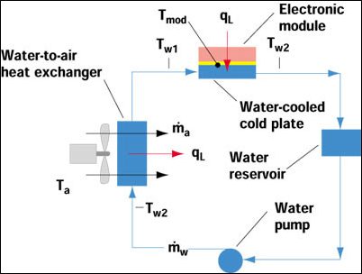

Raspberry Pi 3 Supercomputer Heatsink Design Calculations
In what follows we will perform calculations that will drive the design requirements of the Raspberry Pi 3 supercomputer heatsink. We will make heavy use of the article at http://www.electronics-cooling.com/2002/05/estimating-temperatures-in-a-water-to-air-hybrid-cooling-system/ to perform these calculations
1 Power Supply
2 Current Draws
3 Temperatures
4 Power Consumptions
5 Thermal Impedance Estimate of CPU (case to ambient) [deg C/W]
6 Thermal Impedance Estimate of CPU (junction to case)
7 Thermal Impedance Estimate of CPU (junction to ambient) [deg C/W]
8 Calculation of Heatsink Thermal Impdedance Requirements
9 Water-cooled Heatsink Design Calculations
From http://www.electronics-cooling.com/2002/05/estimating-temperatures-in-a-water-to-air-hybrid-cooling-system/
Figure 1: /home/mark/Engineering/Supercomputer/Thermal Calcs/water_cooled_heatsink_model.jpg

We will assume that the initial water temperature is 25C [deg C]
| (%i130) | T_water_initial: 25; |
The temperature of the CPU according to Equation 1 in the article is: [deg C]
| (%i131) | T_CPU_initial: (P_RPi3_4_core_heavy_load * R_theta_heatsink_ambient) + T_water_initial; |
Typical Water Flow Rate [Liters per Hour]
| (%i132) | Flow_rate_typ: 50; |
Conversion factor between liter of water to kg of water (at 4C) [L/kg]
| (%i133) | Liters_to_kg_water: 1; |
Mass of water flowing past water cooled cold-plate: [kg/s]
| (%i134) | M_dot: (Flow_rate_typ / Liters_to_kg_water) * (1/3600); |
Specific heat of water [J / (kg x deg C)]
| (%i135) | C_pw: 4186; |
Specific Heat Rate of water flowed to cold-plate [J/(sec x deg C)]
| (%i136) | C_w: M_dot * C_pw; |
| (%i137) | float(C_w); |
Estimate effectiveness of the heat exchanger: [arb units]
| (%i138) | epsilon: 0.1; |
Calculate Specific Heat Rate of air flowing through heat exchanger:
Specific heat of air (at 300K) [J / (kg x deg C)]
| (%i139) | C_pa: 1005; |
Mass flow rate of air past heat exchanger: [cubic feet per minute]
| (%i140) | M_dot_air_CFM: 25; |
Mass flow rate of air past heat exchanger: [kg / s]
| (%i141) | M_dot_air: M_dot_air_CFM * (1/60) * (1.2754) * ((0.3048)^3); |
Specific Heat Rate of air flowing through heat exchanger [J / (s x deg C)]:
| (%i142) | C_a: M_dot_air * C_pa; |
Initial temperature of the air [deg C]
| (%i143) | T_air_initial: 25; |
Final temperature of the CPU [deg C]
| (%i145) | T_CPU_final: P_RPi3_4_core_heavy_load * (R_theta_heatsink_ambient + ((1/(epsilon*C_a)) - (1/C_w))) + T_air_initial; |
Temperature rise of the CPU [deg C]
| (%i146) | delta_T_CPU_heavy_load_WC: T_CPU_final - T_water_initial; |